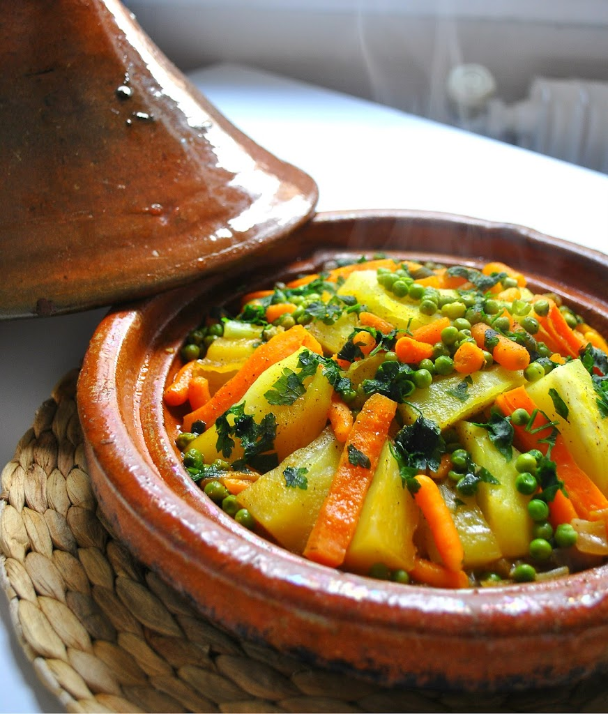

Tajine Amazighi

Tajine: The Culinary Heart of Morocco
Tajine, is all about simplicity and depth of flavor. It's a slow-cooked stew where meat becomes irresistibly tender and vegetables meld with aromatic spices. The charm of tajine lies in its traditional pot, designed for practicality—the knob-like lid lets you easily check on the dish, add ingredients, or stir without the fuss of mittens. It's more than just a meal; it's a celebration of Moroccan flavors and a testament to the art of slow cooking.
Ingredients
- 1/2 kg beef, or lamb, cut into small pieces
- 1/4 to 1/3 cup olive oil
- 1 medium onin, finely chopped
- 3 to 4 cloves garlic, finely chopped or pressed
- 3 to 4 small potatoes, or medium, quartered lengthwise
- 3 to 4 small carrots, or medium, quartered lengthwise
- 4 small zucchini, whole, or other veggies, optional
- 1 small handful parsley, and/or cilantro sprigs, tied into a bouquet
- 1 small jalapeño, or chile pepper, optional
- 1 small bell pepper, any color, cut into strips or rings
- 1 small preserved lemon, quartered
- 1 handful olives, green or red/violet
For the Seasoning:
- 1 teaspoon salt, or to taste
- 1 teaspoon ginger
- 1/2 teaspoon freshly ground black pepper
- 1/2 teaspoon turmeric
- 1/2 teaspoon paprika
- 1/2 teaspoon ground cumin
- 1/4 teaspoon cayenne pepper, optional
- 1 pinch saffron threads, optional
Steps to Make It
- Pour the olive oil into the base of a tajine.
- Arrange the onion rings across the bottom and scatter the chopped onion and garlic on top.
- Arrange the meat, bone-side down, in a mound in the center of the tajine. (The taller the mound, the more conical your arrangement of vegetables will be.)
- Combine the spices in a small bowl.
- Sprinkle a little less than half of the seasoning over the meat and onion.
- Place the prepped vegetables in a large bowl.
- Add the the remaining seasoning and tooss to coat the vegetables evenly.
- Arrange the vegetables in a conical shape around the meat.
- Arrange the bell pepper strips in the center and top with the parsley bouquet and then the jalapeño pepper, Garnish the tajine with the preserved lemon quarters and olives.
- Add 2 1/2 cups water to the empty bowl and swirl to rinse the residual spices.
- Add the water to the tajine, cover, and place the tajine over medium coals in a brazier, or stovetop over medium-low heat.
Note: use of a diffuser under the tajine is necessary if using clay or ceramic on an electric stove and recommended for other heat sources as well
- Leave the tajine to reach a simmer. This may take a long time, 20 minutes or so; be cautious in feeling the need to increase the heat
- Once simmering, continue cooking the tajine over medium-low heat until the meat and vegetables are very tender and the sauce is reduced, up to 3 hours for beef and up to 4 hours for lamb.
- While the tajine is cooking, you may check the level of the liquids occasionally and add a little water as necessary, but otherwise, try not to disturb the tajine
- Do stay alert for the smell of anything burning, and lower the heat if necessary to avoid scorching ingredients and/or cracking the tajine. It is normal, however, for some of the base onions to burn and adhere to the bottom of the tajine as they caramelinze and reduce.
- Remove the cooked tajine from the heat and serve. It will stay warm while covered for 30 minutes
Tips for Cooking Tajine Amazighi With Chicken
if you want to use chicken in place of lamb or beef, you may leave the skin on or remove it; arrange the chicken meat-side (or skin-side) up.
Cooking directions will basically remain the same, except that you should recude the water to 1 1/2 cups and reduce the cooking time to 2 hours, or until the veggies test done.
To compensate for the shorter cooking time, it may be helpful to use smaller potatoes and carrots, and to briefly parboil legumes such as peas and green beans before adding them to the tajine